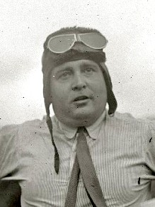
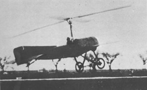

Хуан де ла Сьерва — испанский инженер и изобретатель, создатель первого в мире автожира. В 1923 году он совершил первый полет на своем аппарате C.1, доказав жизнеспособность идеи использования несущего винта в режиме авторотации.
Идея автожира пришла ему после аварии самолета, который потерял скорость на вираже и свалился в штопор. Сьерва задумался: как сделать полет безопасным даже при остановке двигателя?

В отличие от вертолета, несущий винт автожира не приводится в движение двигателем, а вращается за счет набегающего потока воздуха — явления авторотации. Это делает автожир исключительно безопасным: при отказе двигателя он планирует на землю с вертикальной скоростью всего 3-5 м/с.
В 1928 году Сьерва совершил турне по Европе и Америке, демонстрируя свое изобретение. Автожир произвел фурор — он мог взлетать с места длиной всего 30 метров и садиться практически на точке.